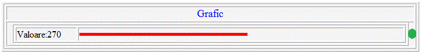
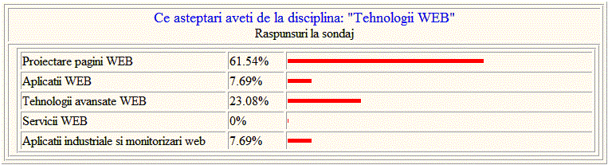
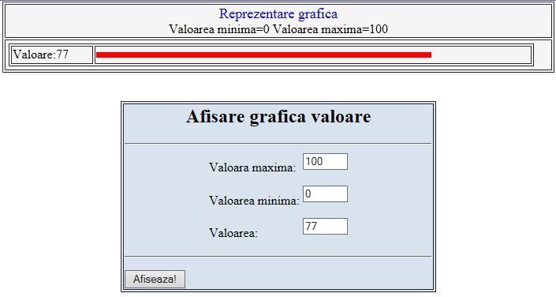
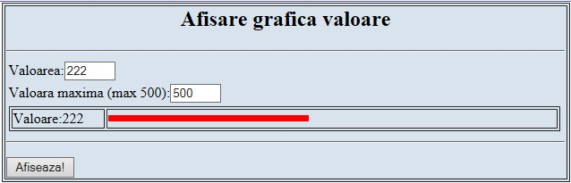

Tematica lucrari
Instalare XAMPP
- Se descarca de pe net http://www.science.upm.ro/~traian/web_curs/Web_tech/start.html -Download utilitare - arhiva xampp.7z
- Sau se descarca de pe http://cs.engineering.upm.ro/Aquila/stud/Calc3/bd/ cu parola: student psw: studentupm2008
- Sau se copiaza din reatea \\Aquila\stud\Calc3\bd
- Se dezarhiveaza
- Se lanseaza xampp-setup
- Se lanseaza xampp-start
- Se verifica existenta folder-ului htdocs in care se gaseste index.html si index.php
- Se lanseaza http://localhost sau http://127.0.0.1
Instructiuni if, instructiuni repetitive
- afisarea unui tabel 10 X 10 cu numere , cu patratele numerelor, cu valori aleatoare
- colorarea celulelor cu numere pare
- colorarea diagonalei principale, secundare, dreptunghiuri concentrice
- generarea unei liste pe doua nivele
-
Afisari grafice in PHP
Afisare consum
- Avand variabilele :
- $val=270;
- $min=20;
- $max=500;
Realizati o aplicatie pe partea server-ului care sa afiseze grafic valoarea $val

Aplicatie pentru afisare sondaj procentual sub forma grafica.
- Sa presupunem ca avem urmatoarele variabile:
$intreb=array("Proiectare pagini WEB ", "Aplicatii WEB ", "Tehnologii avansate WEB ", "Servicii WEB ","Aplicatii industriale si monitorizari web ");
$rasp=array(61.54,7.69,23.08,0,7.69);
Unde $intreb-intrebarile la chestionar si $rasp procentul reprezentand raspunsurile la fiecare varianta.
- Realizati o aplicatie pentru afisare sondaj procentual sub forma grafica.

- Realizati o imagini dinamica de genul:
- Form-uri php
- Se va realiza o aplicatie client cu un form in care se introduc diverse date si aplicatia pe partea de server care prelucreaza datele din form
exemple:
- se introduce in form lungimea si latimea unui dreptunghi dupa care aplicatia pe partea de server calculeaza aria si o afiseaza
- se introduce in form temperatura in gr C dupa care aplicatia pe partea de server afiseaza temperatura in in gr K si gr F
- ...
- se introduce in form val_min, val_max si val dupa care aplicatia pe partea de server afiseaza grafic valoarea scalat tinand cont de val_min si val_max

- reluati aplicatia anterioara si afisati sub forma:
